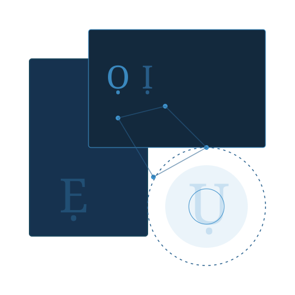

AfriWise AI Model
Run the powerful Southern Nigerian language model locally on your own device, offline and in total privacy.

AfriWise is a state-of-the-art language model fine-tuned specifically to understand, translate, and preserve Southern Nigerian languages, including Igbo, Efik/Ibibio, and Bini/Edo.
Built on top of the efficient Phi-3-Mini architecture, it is designed to run entirely offline on consumer hardware, bridging the digital divide for low-resource languages.
The Importance of AfriWise
Cultural Preservation
Most commercial AI models overlook African languages. AfriWise ensures that Southern Nigerian heritage, idioms, and orthography are actively represented and preserved in the modern AI era.
Data Privacy
Because it runs locally via Ollama, none of your prompts or translations are ever sent to a cloud server.
Accessible Tech
At under 4 billion parameters (quantized to 4-bit GGUF), AfriWise requires less than 6GB of RAM. It runs quickly on standard laptops without requiring expensive cloud GPUs or persistent internet connectivity.
How to Download and Run
We use Ollama to make running AfriWise incredibly simple. Ollama handles downloading the weights, managing RAM, and running the inference engine locally.
- Install Ollama: Download it from ollama.com if you don't have it installed.
- Pull the Model: Ollama will automatically download the model when you run it for the first time.
- Run the Model: Open your terminal or command prompt and paste the command below.
Ollama will automatically download the 7GB model file. Once finished, it will drop you directly into a chat interface.
Detailed Installation Guide:
- Step 1: Install Ollama from ollama.com
- Step 2: Verify installation by opening a terminal and running
ollama --version - Step 3: Run
ollama run emmy_rabs/afriwiseto download and start the model - Step 4: Wait for the download to complete (approximately 4GB for the quantized version)
- Step 5: You'll see the
>>>prompt indicating the model is ready to use
Compatible Software:
AfriWise is distributed in GGUF format, making it compatible with various inference software:
- Ollama: Primary recommended method (used in this guide)
- LM Studio: GUI-based interface for local LLMs
- Jan.ai: Open-source alternative with chat interface
- Text Generation WebUI: Advanced interface with multiple backend options
- llama.cpp: Command-line interface for direct GGUF inference
Usage Tips:
- Use
/byeto exit the Ollama chat interface - To reload the model later, simply run
ollama run emmy_rabs/afriwiseagain - The model runs completely offline once downloaded
- For best performance, ensure you have at least 8GB RAM available
Usage Example
Once you see the >>> prompt in your terminal, you can start talking to AfriWise directly. To exit the chat, simply type /bye.
In Bini-Edo: 'Ob'owie' means good morning. For elders, you would prostrate or kneel while greeting.